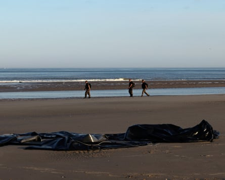

French police slashing the boats of people smugglers was not “pleasant” but the right tactic, a UK cabinet minister has said, saying the government welcomed the new approach from the authorities.
It comes as Keir Starmer and Emmanuel Macron are expected to announce new plans for French police to do more to block small boats crossing the Channel when the French president arrives for his state visit in London this week.
However, there is still doubt over plans for a touted “one in, one out” wider deal on returning asylum seekers.
The transport secretary, Heidi Alexander , said the new tactics by French police, filmed by broadcasters, were not easy to watch but would discourage dangerous journeys.
On Friday, French police were filmed as they used knives to puncture a boat near Boulogne in northern France, although it is not known if this was a one-off.
French police walk past a damaged zodiac boat left behind by people trying to cross the Channel near Boulogne.Photograph: Gonzalo Fuentes/Reuters
“I think that footage that we saw, whilst it wasn’t pleasant to see, in terms of the action that the French authorities were taking to cut those boats, to prevent people leaving the French shores, that’s action that we are supporting,” Alexander said.
She told Times Radio: “We’re working very closely with the French authorities, and the visit of President Macron this week is another opportunity to continue those discussions.
“I’m not going to speculate on the coverage of this possibility of a ‘one in, one out’ agreement with France . We’ve seen in the last couple of days, haven’t we, that the French authorities are now using some new tactics to stop the boats in shallow waters.
“We welcome that and we want to build on it. I know that the prime minister spoke with President Macron at the weekend … We’ve been honest that this is a problem that we’re not going to fix overnight.”
Macron arrives on Tuesday for a state visit, which is scheduled to include an Anglo-French summit as well as an address to parliament.
France is expected to announce it will allow police to intervene in shallow waters up to 300 metres (985ft) from shore in order to stop small boats leaving. This would require changes to existing protocol that do not contravene the UN convention on the law of the sea, which bars any intervention at sea that is not a rescue.
Starmer is under considerable pressure to reduce the number of people arriving on small boats across the Channel. More than 20,000 people have crossed to the UK in the first six months of this year, up 48% on the equivalent period in 2024.
Asked whether the hundreds of millions of pounds given to France to stop the small-boat crossings was “value for money”, Alexander told Times Radio: “We will always spend our money in the public interest, in the national interest.”